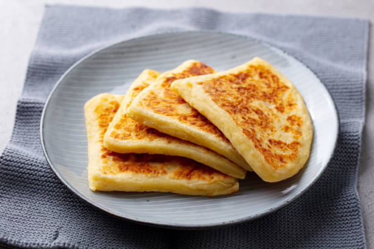

Tattie scones are similar to potato pancakes.
From an Irish and Scottish background, these scones are the perfect side with any breakfast meal and are a family favorite! Add onion, pepper, or any other spices for flavor. Serve with butter
Ingredients
1 pound cooked potatoes
4 ounces self-rising flour
2 ounces butter
½ pinch salt
Steps (as taken from allrecipes )
Heat a lightly greased griddle or cast iron skillet over medium-high heat.
Mash potatoes with flour, butter, and salt in a large bowl until a stiff dough forms.
Turn dough out onto a lightly floured work surface. Knead dough lightly and roll dough out to a 1/2-inch-thick circle. Cut into 6 equal wedges.
Working in batches, cook scones on the hot griddle until golden brown, 4 to 5 minutes per side.
Return to top
Return to main page